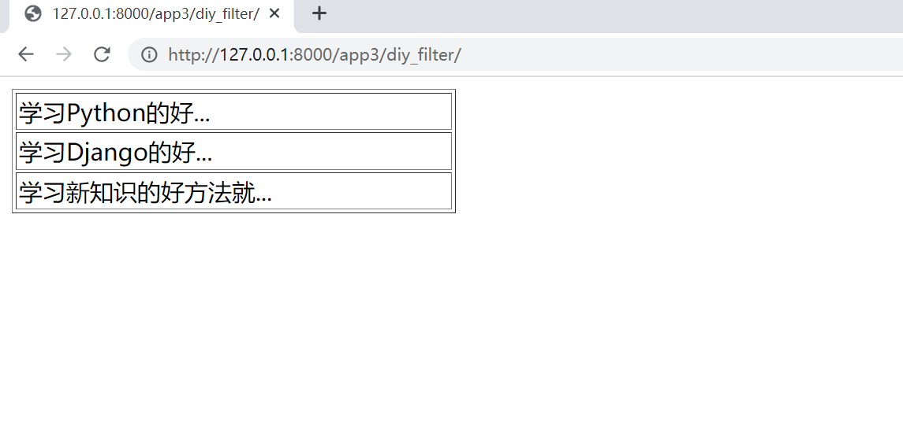

Contents
3.1. Django模板语言-DTL¶
3.1.1. 1.模板变量¶
1. 模板变量的表示
模板比那里使用“{{ 变量名 }}”来表示。
我的姓名 {{ name }}，我的年龄{{ age }}
（2）模板变量还可以是列表、字典以及类对象
2. 实例
（1）app3/views.py
from django.shortcuts import render
from django.http import HttpResponse
import datetime
def var(request):
# v=PersonInfo.objects.all()
# print(v)
# 列表对象
lists = ['Java', 'Python', 'C', 'C#', 'JavaScript']
# 字典对象
dicts = {'姓名': '张三', '年龄': 25, '性别': '男'}
return render(request, '3/var.html', {'lists': lists, 'dicts': dicts})
render()函数传给模板文件的模板变量名称就是字典的键名称，这样在字典中就可以用这个字典的键名称了。
（2）templates/3/var.html
{{ lists }}
<table border=1>
<tr>
<td>{{ lists.0 }}</td>
<td>{{ lists.1 }}</td>
<td>{{ lists.2 }}</td>
<td>{{ lists.3 }}</td>
<td>{{ lists.4 }}</td>
</tr>
</table>
<br>
{{ dicts }}
<table border=1>
<tr>
<td>{{ dicts.姓名 }}</td>
<td>{{ dicts.年龄 }}</td>
<td>{{ dicts.性别 }}</td>
</tr>
</table>
（2） 编写路由，app3/urls.py
from django.contrib import admin
from django.urls import path, include
from app3 import views
urlpatterns = [
path('app3/var/', views.var)
]
3.1.2. 2.模板标签¶
参考文献：
https://www.yuque.com/bucea/tb5c6d/gvi5wd#ef4a9db8
https://docs.djangoproject.com/zh-hans/3.2/ref/templates/builtins/#include
2.1 条件判断模板标签¶
条件判断模板标签用于条件判断，由{% if %}和{% endif %}标签组合的闭合标签。该标签中还可以包含{% elif %}和{% else %}标签。
（1） 条件判断模板标签一般用法如下：
{% if 条件1 %}
{{ 内容1 }}
{% elif 条件2 %}
{{ 内容2 }}
{% else %}
{{ 默认内容 }}
{% endif %}
（2）条件判断模板标签的使用
{% if age < 18 %}
<p> 还未成年 </p>
{% elif age == 18 %}
<p>恭喜</p>
{% else %}
<p>你成年了，亚历山大</p>
{% endif %}
2.2 循环模板便签¶
循环浏览数组中的每个项目，使该项目在上下文变量中可用。例如，要显示
athlete_list 中提供的运动员列表：
<ul>
{% for athlete in athlete_list %}
<li>{{ athlete.name }}</li>
{% endfor %}
</ul>
如果你需要访问字典中的项目，这也很有用。例如，如果你的上下文中包含一个字典
data，下面将显示该字典的键和值：
{% for key, value in data.items %}
{{ key }}: {{ value }}
{% endfor %}
for 循环设置了一组可以在循环体内直接使用的变量：
变量名 |
描述 |
|---|---|
|
循环计数器，表示当前循环的索引（从 |
|
循环计数器，表示当前循环的索引（从 |
|
反向循环计数器（以最后一次循环为
|
|
反向循环计数器（以最后一次循环为
|
|
当前循环为首个循环时，该变量为 True |
|
当前循环为最后一个循环时，该变量为 True |
|
在嵌套循环中，指向当前循环的上级循环 |
app3/views.py
from django.shortcuts import render
from django.http import HttpResponse
import datetime
def for_label(request):
dict1 = {'书名': 'Django开发', '价格': 80, '作者': '张三'}
dict2 = {'书名': 'Python开发', '价格': 90, '作者': '李四'}
dict3 = {'书名': 'Java开发', '价格': 100, '作者': '王五'}
lists = [dict1, dict2, dict3]
return render(request, '3/for_label.html', {'lists': lists})
(2)templates/3/for_label.html
<table border=1>
{% for list in lists %}
{% if forloop.first %}<!-- 如果是第一条记录-->
<tr>
<td>第一个值：{{ list.书名 }}</td>
</tr>
{% endif%}
<tr>
<td>当前值：{{ list.书名 }}，价格：{{ list.价格 }}，当前正序索引{{ forloop.counter0 }}，当前倒序索引{{ forloop.revcounter0 }}</td>
</tr>
{% if forloop.last %}<!-- 如果是最后一条记录-->
<tr>
<td>最后一个值：{{ list.书名 }}</td>
</tr>
{% endif%}
{% endfor %}
</table>
编写路由规则
app3/urls.py
from django.contrib import admin
from django.urls import path, include
from app3 import views
urlpatterns = [
path('app3/for_label', views.for_label)
]
2.3 模板过滤器¶
使用管道符号|来应用过滤器，用于进行计算、转换操作，可以使用在变量、标签中。
如果过滤器需要参数，则使用冒号:传递参数。
参考文献：https://www.yuque.com/bucea/tb5c6d/ev8ion
（1）app3/views.py
from django.shortcuts import render
from django.http import HttpResponse
import datetime
def filter(request):
# 定义网址
# url_addr="<table border=1><tr><td>这是一个表格</td></tr></table>";
str1 = "abcdefg"
str2 = "ABCDEFG"
slice_str = "1234567890"
time_str = datetime.datetime.now()
return render(request, '3/filter.html', {"str1": str1, "str2": str2, "slice_str": slice_str, "time_str": time_str})
新建模板文件
templates/3/filter.html
小写转大写：{{ str1|upper }}<br>
大写转小写：{{ str2|lower }}<br>
切片操作：{{ slice_str|slice:"2:4" }}<br>
时间格式化：{{ time_str|date:"Y-m-d G:i:s" }}<br>
编写路由规则
app3/urls.py
from django.contrib import admin
from django.urls import path, include
from app3 import views
urlpatterns = [
path('app3/filter/', views.filter),
]
3.1.3. 3. 模板的高级用法¶
3.1 模板转义¶
Django的模板会对HTML标签和Javascript标签进行自动转义，这样做事未了代码的安全。
例如：Django会将JavaScript脚本代码中的一些字符自动转义，如将“<”转换为“<”，将“ ’ ’”转换为“'”。
可以使用“模板变量|safe”的方式告诉Django这段代码是安全的，不需要转义（即关闭模板转义）。
app3/views.py中新增视图函数。
from django.shortcuts import render
from django.http import HttpResponse
import datetime
def html_filter(request):
html_addr="<table border=1><tr><td>这是一个表格</td></tr></table>"
html_script="<script language='javascript'>document.write('非法执行');</script>"
return render(request,'3/html_filter.html',{"html_addr":html_addr,"html_script":html_script})
新增模板文件
templates/3/html_filter.html
关闭模板转义-表格：{{ html_addr|safe }}
默认模板转义-表格：{{ html_addr }}<br>
默认模板转义-脚本：{{ html_script }}<br>
关闭模板转义-脚本：{{ html_script|safe }}<br>
编写路由规则
app3/urls.py
from django.contrib import admin
from django.urls import path, include
from app3 import views
urlpatterns = [
path('app3/html_filter/', views.html_filter)
]
关闭模板转义-表格：
这是一个表格
默认模板转义-表格：<table border=1><tr><td>这是一个表格</td></tr></table>
默认模板转义-脚本：<script language='javascript'>document.write('非法执行');</script>
关闭模板转义-脚本：非法执行
3.1.4. 4.【实战】自定义过滤器¶
4.1 准备工作¶
在app3下创建一个“templatetags”的包，在包下创建myfilter.py和__init__.py(内容为空)的文件。
4.2 编写自定义过滤器并注册¶
app3/templatetags/myfilter.py
from django import template
register = template.Library()
@register.filter
def show_title(value, n):
if value.__len__() > n:
return f'{value[0:n]}...'
else:
return value
@register.filter是一个装饰器，指明show_title()函数是一个过滤器，在show_title()函数中，value是文章标题，n是指标题要显示的长度，当长度大于n时，将后面的内容以…表示。
4.3 加载自定义过滤器并编写模板¶
（1）app3/views.py中新增视图函数diy_filter()
from django.shortcuts import render
from django.http import HttpResponse
import datetime
def diy_filter(request):
dict1 = {'标题': '学习Python的好方法就是每天不间断的写代码'}
dict2 = {'标题': '学习Django的好方法就是上手做个项目比如CMS、OA等'}
dict3 = {'标题': '学习新知识的好方法就是快速构建一颗知识树'}
lists = [dict1, dict2, dict3]
return render(request, '3/diy_filter.html', {'lists': lists})
新建模板文件
templates/3/diy_filter.html
{% load myfilter %}
<table border=1 style="width:300px">
{% for list in lists %}
<tr><td>{{ list.标题|show_title:10 }}</td></tr>
{% endfor %}
</table>
添加一条路由规则，
app3/urls.py
from django.contrib import admin
from django.urls import path, include
from app3 import views
urlpatterns = [
path('app3/diy_filter/', views.diy_filter),
]
显示效果
3.1.5. 5.【实战】自定义标签¶
5.1 简单标签¶
（1）新建文件app3/templatetags/mytags.py,定义标签函数show_titlr()。
from django import template
register = template.Library()
@register.simple_tag
def show_title(value, n):
if len(value) > n:
return f'{value[0:n]}...'
else:
return value
@register.simple_tag是一个装饰器，指明show_title()函数是一个自定义的简单标签。
定义视图函数diy_tags()
from django.shortcuts import render
from django.http import HttpResponse
import datetime
def diy_tags(request):
dict1 = {'标题': '学习Python的好方法就是每天不间断的写代码'}
dict2 = {'标题': '学习Django的好方法就是上手做个项目比如CMS、OA等'}
dict3 = {'标题': '学习新知识的好方法就是快速构建一颗知识树'}
lists = [dict1, dict2, dict3]
return render(request, '3/diy_tags.html', {'lists': lists})
打开模板文件
templates/3/diy_tags.html,编写代码如下
{% load mytags %}
<table border=1 style="width:300px">
{% for list in lists %}
<tr><td>{% show_title list.标题 10 %}</td></tr>
{% endfor %}
</table>
编写路由规则
app3/urls.py
from django.contrib import admin
from django.urls import path, include
from app3 import views
urlpatterns = [
path('app3/diy_tags/', views.diy_tags),
]
此时与自定义过滤器访问内容一样。
5.2 包含标签¶
app3/templatetags/mytags.py中增加自定义标签函数show_info_tags()
from django import template
register = template.Library()
@register.simple_tag
def show_title(value, n):
if len(value) > n:
return f'{value[0:n]}...'
else:
return value
@register.inclusion_tag("3\show_info_tags.html")
def show_info_tags():
dict1 = {'标题': '张三|2020-02-02'}
dict2 = {'标题': '李四|2020-02-01'}
dict3 = {'标题': '王五|2020-01-31'}
lists = [dict1, dict2, dict3]
return {'lists': lists}
新建模板文件
templates/3/show_info_tags.html
<table border=1 style="width:300px">
{% for list in lists %}
<tr><td>{{ list.标题 }}</td></tr>
{% endfor %}
</table>
templates/3/show_info.html
{% load mytags %}
<p>当前文件是show_info</p>
<p>以下内容是从另外一个模板文件show_info_tags加载的</p>
{% show_info_tags %}
模板中使用自定义标签，必须先使用{% load 自定义标签%}进行装载，然后就能在模板中调用自定义的标签函数来显示一段HTML信息。
编写视图，新增视图函数
from django.shortcuts import render
from django.http import HttpResponse
import datetime
def show_info(request):
return render(request,'3/show_info.html')
(4 ) 编写路由规则 app3/urls.py
from django.contrib import admin
from django.urls import path, include
from app3 import views
urlpatterns = [
path('app3/show_info/', views.show_info),
]